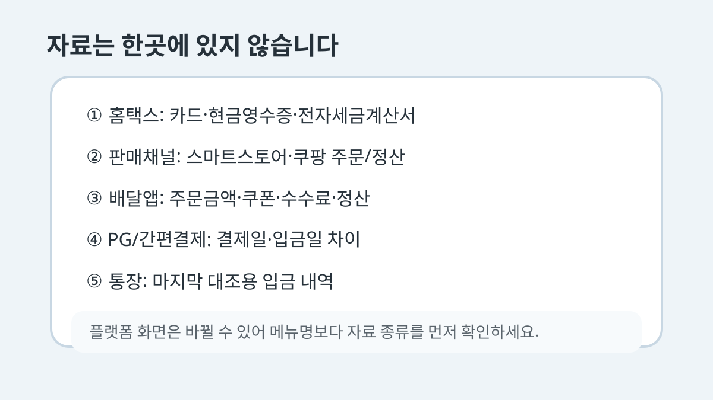
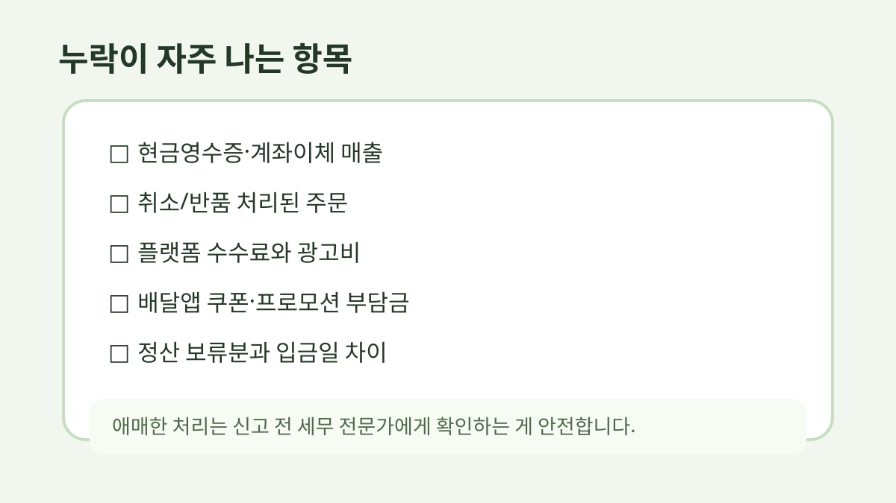

종합소득세 신고 전, 쇼핑몰·배달 매출자료는 이 순서로 모아두면 덜 헷갈립니다
5월이 되면 제일 헷갈리는 게 “매출이 어디에 흩어져 있는지”입니다.
스마트스토어만 해도 정산 내역, 카드 매출, 현금영수증, 수수료가 따로 보이고요.
배달앱까지 같이 쓰면 더 정신없습니다.
이 글은 세금 계산이나 신고 방법을 대신 설명하는 글은 아닙니다.
다만 세무사에게 맡기든 직접 신고하든, 자료를 모으는 순서가 잡혀 있으면 훨씬 덜 헤맵니다.
아래 내용은 자료 정리용 메모에 가깝습니다.
업종, 과세 유형, 신고 방식에 따라 필요한 자료와 처리 기준은 달라질 수 있으니, 숫자 판단이 애매하면 세무 전문가에게 확인하는 편이 안전합니다.
먼저 “신고에 참고할 자료”와 “실제 입금 내역”을 나눠봅니다
많이 헷갈리는 부분이 여기입니다.
통장에 들어온 돈만 보고 매출이라고 생각하면 숫자가 안 맞을 때가 많습니다.
플랫폼 수수료, 카드 수수료, 쿠폰/포인트, 환불/취소가 빠져 있거나 입금 시점이 다를 수 있기 때문입니다.
처음에는 이렇게 나눠두는 게 편합니다.
• 매출이 발생한 자료: 홈택스, 카드매출, 현금영수증, 플랫폼 판매/주문 내역
• 실제 돈이 들어온 자료: 통장 입금, 정산 입금, PG사 입금
• 차이를 확인할 때 보는 자료: 수수료, 환불, 취소, 광고비, 쿠폰 부담금
말은 간단한데, 막상 모으면 파일명이 뒤섞입니다.
저는 날짜를 앞에 붙여서 저장하는 쪽이 제일 덜 헷갈렸습니다.
예를 들면 `2025_스마트스토어_월별정산` 이런 식입니다.
1. 홈택스에서 큰 줄기부터 확인합니다
홈택스에는 카드 매출, 현금영수증, 전자세금계산서 같은 자료가 모여 있습니다.
직접 신고를 하지 않더라도 여기 숫자를 먼저 보면 “어떤 자료가 신고 쪽에 잡히는지” 큰 줄기를 볼 수 있습니다.
다만 홈택스만 보면 플랫폼별 정산 수수료나 실제 입금 차이는 바로 보이지 않을 수 있습니다.
그래서 홈택스 자료는 기준점처럼 두고, 판매 채널 자료를 옆에 붙여보는 느낌이 좋습니다.
2. 스마트스토어·쿠팡 같은 판매 채널 자료를 따로 받습니다
온라인 판매를 한다면 판매 채널 관리자 페이지에서 기간별 매출/정산 자료를 내려받아야 합니다.
여기에는 주문 금액, 취소/반품, 배송비, 수수료, 정산 예정/완료 금액이 섞여 있습니다.
이때 한 번에 ‘정산금액’만 보지 말고 아래처럼 나눠서 봅니다.
• 주문 기준 매출
• 취소/반품 금액
• 배송비
• 플랫폼 수수료
• 광고비나 프로모션 부담금
• 실제 정산 입금액

3. 배달앱은 주문 매출과 입금액이 더 다를 수 있습니다
배달앱은 쿠폰, 배달비, 중개수수료, 결제수수료가 같이 얽힙니다.
그래서 통장 입금액만 보고 “이게 매출”이라고 단정하면 차이가 생길 수 있습니다.
배민, 요기요, 쿠팡이츠 같은 채널을 쓴다면 관리자 페이지에서 정산 내역을 기간별로 받아두는 게 좋습니다.
가능하면 월별로 잘라서 저장해두세요.
나중에 1년치를 한 번에 찾으려면 꽤 번거롭습니다.
4. PG사·카드 매출 자료도 빠지기 쉽습니다
자사몰이나 예약 결제를 받는 경우에는 PG사 자료도 따로 봐야 합니다.
네이버페이, 토스페이먼츠, KG이니시스, 카카오페이처럼 결제 수단이 나뉘면 입금 주기도 다를 수 있습니다.
여기서 중요한 건 “입금일”과 “매출 발생일”이 다를 수 있다는 점입니다.
어느 기간의 매출로 볼지는 세무 판단이 들어갈 수 있으니, 애매하면 전문가에게 확인하는 게 안전합니다.
5. 통장 입금 내역은 마지막 대조용으로 봅니다
통장 내역은 꼭 필요하지만, 처음부터 통장만 보면 헷갈립니다.
입금자명이 플랫폼명으로 찍히지 않거나, 며칠치가 묶여 들어오거나, 수수료가 빠진 금액만 들어오는 경우가 있기 때문입니다.
저라면 순서를 이렇게 둡니다.
- 홈택스 자료 확인
- 판매 채널별 매출/정산 자료 다운로드
- PG사·카드·현금영수증 자료 확인
- 통장 입금 내역과 대조
- 차이가 나는 이유를 메모
누락이 자주 나는 체크리스트
아래 항목은 신고 직전에 자주 빠집니다.
• 현금영수증 발행분
• 카드 매출과 플랫폼 매출이 중복으로 잡힌 부분
• 취소/반품 처리된 주문
• 배달앱 쿠폰/프로모션 부담금
• PG사 수수료
• 스마트스토어·쿠팡 정산 보류분
• 오프라인 현금 매출
• 계좌이체로 받은 예약금/선입금

파일명만 정리해도 나중에 훨씬 편합니다
거창한 엑셀을 처음부터 만들 필요는 없습니다.
처음에는 파일명만 통일해도 충분히 도움이 됩니다.
예시는 이렇습니다.
2025_스마트스토어_월별정산.xlsx
2025_배민_정산내역.xlsx
2025_홈택스_카드매출.pdf
2025_통장입금내역.csv
2025_환불취소메모.xlsx
세무사에게 보낼 때도 이렇게 정리돼 있으면 다시 물어보는 일이 줄어듭니다.
직접 신고하는 분도 숫자를 대조하기 쉬워지고요.
다시 적지만, 이 글은 세무 자문이 아니라 자료 정리 순서에 대한 메모입니다.
업종, 매출 규모, 과세 유형에 따라 처리 방식이 달라질 수 있으니 신고 전 애매한 부분은 세무 전문가에게 확인하시는 게 좋습니다.
반응이 있으면 쇼핑몰용, 배달가게용, 프리랜서용으로 나눠서 매출자료 정리표도 따로 만들어보겠습니다.